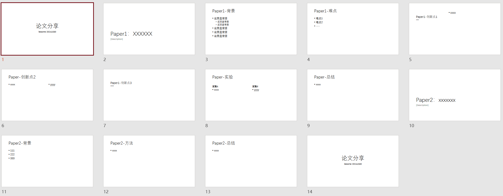
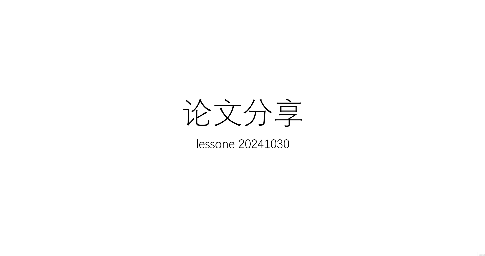
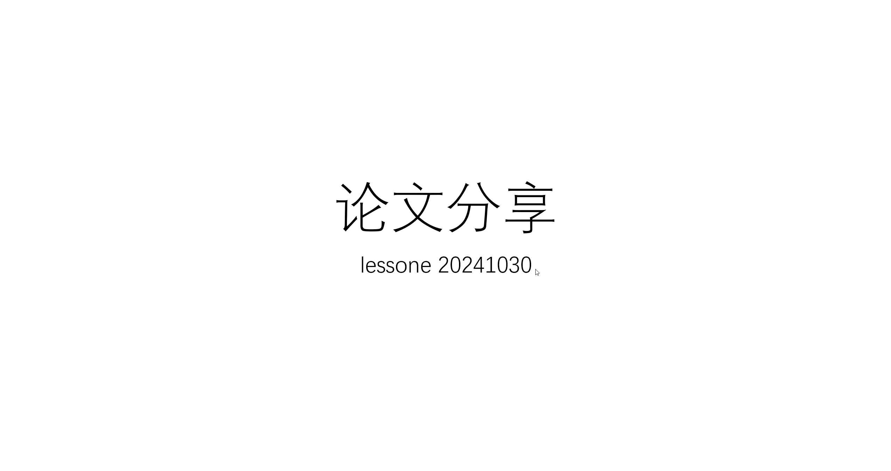
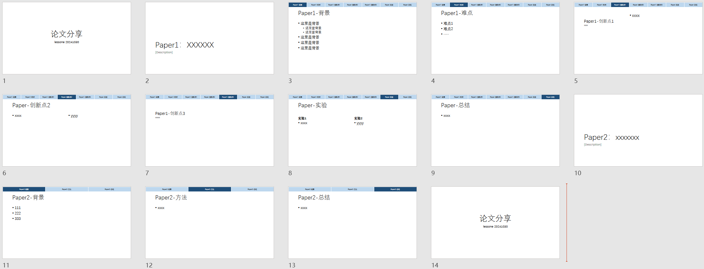

# 实际效果
添加导航栏前的 PPT：


自动添加导航栏后的 PPT：

# 介绍
在现代学术研究中，清晰且专业的演示文稿对于有效传达研究成果至关重要。这款 PPT 自动导航栏生成工具旨在帮助研究生在组会中自动生成美观的 PPT 导航栏，从而在老师提问时快速翻页使逻辑更加清晰，方便理解。
# 功能特点
# 使用教程
- 安装 python 环境
网上教程很多，此处省略了～～
- 安装 python-pptx
在命令行运行下面的命令：
pip install python-pptx |
- 修改文件名称或脚本内的文件名称
将 需要添加导航栏的ppt 的文件名称修改为 input.pptx ，或将脚本中的 input.pptx 修改为 需要添加导航栏的ppt 的名称
- 运行脚本程序
再使用下面的命令运行脚本程序：
python auto_nav.py |

根据提示输入导航栏分段的范围，以下面的 PPT 为例：
- 第 1 页是开头页
- 第 2 页是第一篇 paper 的标题
- 第 3-9 页是第一篇 paper 的主体展示
- 第 10 页是第二篇 paper 的标题
- 第 11-13 页是第二篇 paper 的主体展示
- 第 14 页是结尾页
只需要分段输入主体部分的页码，因此选择输入 3-9,11-13 (英文的逗号)
- 查看运行结果并根据实际情况调整

生成导航栏后的 PPT 已经输出到了同目录下的 output.pptx 中，可以看到，导航栏已经分段生成，可以根据实际情况进行进一步修改。
# 源码
源码获取：PPT 导航栏自动生成源码。